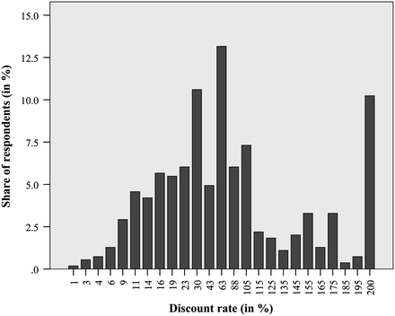
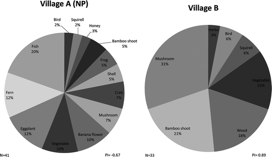

5.1 Introduction
In the mountainous regions of Southeast Asia, the agricultural sector is dominated by smallholder farmers. Rapid rates of population growth, among other factors, have triggered over the last few decades an expansion and intensification of agricultural systems in these ecologically fragile areas, leading to deforestation and the overuse of natural resources (see Chap. 1). While poverty has been reduced, environmental problems such as soil erosion, landslides and declining soil fertility have become more severe, threatening the long-term livelihood strategies of local populations. The combination of poverty and environmental degradation remains an important issue in these areas, as the poor are both the first in line to pay for its negative consequences and at the same time significant contributors through their agricultural activities.
Addressing sustainable development in fragile upland areas thus requires a good understanding of the economic incentives that drive natural resource use by smallholder farmers. In rural areas, poverty is often related to limited access to finance and investment opportunities, and is often seen as a key driver of environmental degradation, as it can lead to the expansion of production systems within fragile areas and induces short-sighted agricultural behaviors; for example, the planting of maize without soil cover on very steep slopes. Whether such a causal relationship can actually be established remains intensely debated in the literature (Dasgupta and Mäler 1995; Dasgupta et al. 2005; Duraiappah 1998; Reardon and Vosti 1995; Scherr 2000), for as noted by these authors, the nature and strength of the linkages between poverty and the environment tend in fact to be site-specific and dependent upon, among other factors, the institutional framework in place, the type of poverty being experienced, the level of inequality and the type of environmental problems in question.
The objective of this chapter is to shed light on the nature of the linkages between poverty and the environment in the mountainous areas of mainland Southeast Asia, and to derive pro-poor policy recommendations that promote sustainable development in these regions. This chapter draws on empirical research conducted in northern Vietnam between 2007 and 2011, and on one case study conducted in northern Thailand in 2011.
After defining poverty and presenting the main explanatory approaches taken regarding the linkages between rural poverty and the use of natural resources in Sects. 5.2 and 5.3 presents the Vietnamese data and will explore empirically the linkages between poverty and access to capital, exposure and susceptibility to risks, and risk preference and discount rates. In Sect. 5.4 we test different hypotheses linking poverty with behavior related to natural resources, explore income diversification strategies (Sect. 5.4.1), short-term input use (Sect. 5.4.2) and longer-term investment in natural resources (Sect. 5.4.3). Section 5.5 concludes and derives policy implications.
5.2 Definitions of, and Explanatory Approaches to, the Linkages Between Agriculture, Poverty and Natural Resource Use
Poverty is a multi-dimensional concept that encompasses not only insufficient income, but also a lack of entitlements and access to a variety of resources, such as the human, political, social or natural capital that enables individuals to satisfy their basic needs. People in the uplands of Southeast Asia are among the poorest of their countries’ populations. The geographic remoteness, rugged landscape and fragility of the environment in these areas explain the low level of infrastructure development, the inhabitants’ limited access to technologies and markets, and the high levels of risk and uncertainty to be found. In addition, mountain dwellers are often politically marginalized (Friedrichsen and Neef 2010).
Within environmental studies, authors often differentiate between ‘welfare’ and ‘investment’ poverty (see for example, Reardon and Vosti 1995; Wunder 2001), in which the first concept relates to absolute poverty measures such as those based on income or caloric intake, and the second refers to households’ endowments in terms of various forms of capital, those that enable them to invest in natural resource maintenance. This approach thus identifies individuals who are not poor in absolute terms, but who face deficits of certain forms of capital that prevent them from investing in the maintenance and conservation of natural resources, referring to them as being ‘investment poor’ (Reardon and Vosti 1995). Hence, poverty, as related to environmental resource use, refers not only to households’ inability to satisfy their current needs, but also to their inability to invest in the future, which requires additional levels of income, capital and general economic security.
Several methods used to measure poverty are described in the literature, some of which focus on a single variable, such as income, the level of expenditure or the quantity of caloric intake, and identify as poor those who do not reach a certain threshold – referred to as the poverty line – the line above which basic needs are deemed to be satisfied. This method provides a measure of what is referred to as absolute poverty, and is thus related to the concept of welfare poverty. Other approaches attempt to take into account the multi-dimensionality of poverty, through the computation of a multivariate composite index that accounts for several dimensions of households’ livelihoods, such as the quality of housing, the value of assets, and others (Zeller et al. 2006). Rather than providing an absolute measure, this approach provides a relative poverty index whereby individuals are classified and compared along this set of dimensions. As multi-dimensional poverty indices include indicators related to income, food consumption and the satisfaction of basic needs, as well as indicators of ownership or access to physical, financial, social, natural and human capital, they capture both the means needed to satisfy basic needs as well as welfare outcomes.
The Brundtland Report defined sustainable development as “development that meets the needs of the present without compromising the ability of future generations to meet their own needs” (WCED 1987: 43). This definition is based on three pillars: the conservation of natural resources, economic development and poverty reduction (Vosti and Reardon 1997; Zeller et al. 2010). Most countries in Southeast Asia over the last two decades, and in particular Thailand and Vietnam, have achieved significant economic development and poverty reduction, but have also experienced losses of forest cover and biodiversity, as well as the degradation of soils. The expansion of arable land into steep hillside areas has led to serious soil erosion, as can be seen in the north-western uplands of Vietnam and Thailand, where soil erosion is caused by intensive land use (Clemens et al. 2010; Häring et al. 2010; Heidhues et al. 2007; Lippe et al. 2011; Panomtaranichagul and Herrmann 2007). Biodiversity is severely threatened by both smallholder agriculture and large-scale plantations, usually in areas where rural poverty is widespread (Tonneijck et al. 2006); therefore, resource conservation, economic development and poverty reduction need to be addressed simultaneously (Adams et al. 2004).
Kaimowitz and Angelsen (1998) describe two explanatory approaches regarding the effects of improved technology on deforestation and agricultural land expansion, and each leads to quite different policy conclusions. As reviewed by Maertens et al. (2006), the ‘population approach’ is based on subsistence models, and identifies poverty and population growth, and factors linked to local conditions of lacking market access and low levels of technology, as the main drivers of agricultural expansion into upland and forest areas. Productivity levels in these areas remain low, and environmental degradation is caused by a growing poor population. Given these underlying causes, investment in human capital and technological progress through research and appropriate pro-poor technologies should result in higher agricultural productivity, and thus induce farmers to cultivate less land to meet subsistence needs, extracting fewer natural resources. The ‘market-based approach’ (Kaimowitz and Angelsen 1998), on the other hand, considers access to markets, institutions and technology that enhances the profitability of agriculture as the main driver for agricultural expansion. While agricultural productivity is increased and poverty rates are falling, environmental degradation may increase. Given these underlying causes in the market-based approach, policies related to human capital, infrastructure, access to markets and institutions, must be coupled with policies that protect the environment and provide payments for environmental services (Ahlheim and Neef 2006; Chap. 8). In the upland areas of Thailand and Vietnam, as elsewhere, government policy has indeed followed a market-based approach, one that seeks to couple agricultural and economic development while at the same time protecting forest areas using a command-and-control approach. However, sometimes policies contradict each other. For example, in Thailand, the government has encouraged hill-tribe farmers to undertake subsistence agriculture and not intensify or expand their production activities (see Tipraqsa and Schreinemachers 2009); however, top-down state-driven strategies have dominated, and Neef et al. (2003) provided evidence, in northern Thailand, of the failure of the Thai state paradigm in relation to the management of natural resources. According to Zeller et al. (2010), these two approaches; however, do not adequately capture the governance issues linked to large-scale logging by national and multi-national firms, which has often been followed by the expansion of plantations, such as oil palm in Indonesia and rubber plantations in Laos. A third explanatory approach, termed the ‘governance approach’, is thus needed (Zeller et al. 2010), one which considers institutional and power factors, as well as greed and corruption, those that play a pivotal role in the conversion of smallholder agroforestry1 systems and forested land into plantation agriculture. According to the governance approach, better-off farmers are the key contributors to environmental degradation, as are large-scale companies and the government. Top-down plantation developments and forest protection measures can result in the increased marginalization of indigenous groups – worsening their livelihoods if they do not benefit from the plantations as wage laborers or outgrowers. Given these underlying factors, policy responses should aim to fight corruption, create transparent, decentralized, community-based resource management activities and give a political voice to the poor and marginalized (Zeller et al. 2010).
We note that all three approaches consider the linkages between agriculture, poverty and the use of natural resources, so in this chapter we investigate these linkages and seek to provide the empirical evidence needed to verify or disprove the subsistence- and market-based approaches.
5.3 Characterizing Poverty in Northern Vietnam and its Connection to the Environment
Many of the conceptual links made between poverty and environmental degradation have been based on assumptions regarding poorer people’s capital endowments, levels of vulnerability, attitude towards risk and time preferences. Various authors, such as Duraiappah (1998), Reardon and Vosti (1995) and Wunder (2001), have considered that the nature and extent of linkages between poverty and the environment depend in fact on a number of issues, including the type of poverty and the environmental problems being considered. In this section, we explore empirically these assumptions using the example of an environmentally fragile district – Yen Chau in northern Vietnam.
5.3.1 The Database
Data were collected between 2007 and 2011 from a random sample of 300 households, these being representative of the district. A 12-month recall period was used for questions related to household land use, credit access and poverty status. When selecting the households, a cluster sampling procedure was applied in which, as a first step, a village-level sampling frame was constructed encompassing all villages in the district,2 including information on the number of resident households. Twenty villages were randomly selected using the Probability Proportionate to Size (PPS) method (Carletto 1999), and based on the number of households in each village. Within each selected village, 15 households were then randomly selected using updated, village-level household lists as the sampling frames. This sampling procedure results in a self-weighting sample, since the PPS method accounts for differences in the number of resident households across villages (Carletto 1999). After introducing the measures of poverty used, we will describe the link between poverty and access to financial and natural capital resources, and investigate farmers’ resilience to shocks, their attitudes towards risk and their time preferences.
5.3.2 Poverty Measures Used
Two poverty measures are described in this chapter – one absolute and one relative (cf. Sect. 5.2). The absolute poverty measure builds on an index of household daily per capita expenditure. For the study, detailed data were collected on farmers’ food and non-food expenditures in 2007 and in 2010, following the methodology of the World Bank’s Living Standard Measurement Survey (LSMS), which is described in detail by Grosh and Glewwe (1998, 2000). As there is a considerable amount of seasonality in relation to agricultural production and incomes in Yen Chau district, two expenditure survey rounds were implemented – one between March and April during the lean season (period before the rice harvest) and the second between December and January after harvesting of the farmers’ main crop, and using a recall period of 2 weeks. The final estimate of per-capita daily expenditure was calculated as an average of the expenditure elicited from the two survey rounds. The level of expenditure obtained was used as a proxy of farmers’ incomes, and poor households were identified using the official poverty line set by Vietnam’s Ministry of Labor, Invalids and Social Affairs (MOLISA) for rural areas3 (see also Chap. 12). In 2007, and according to our estimations, 16.9 % of households were living under this line.
In addition to classifying households as poor and non-poor using the official rural poverty line, we also used a relative poverty measure for some of our analyses, classifying households into wealth groups based on a linear composite index constructed using principal component analysis (cf. Dunteman 1994) from a range of indicator variables capture multiple dimensions of poverty. The application of principal component analysis for this purpose was described in detail by Zeller et al. (2006). This index presents households’ scores based on the first principal component extracted, which follows a standard normal distribution. Using this index, we created wealth terciles, that is, groups representing the poorest, averagely wealthy and wealthiest thirds of the sample households. Eleven indicators related to household asset endowments, housing conditions, demography and consumption expenditures4 in 2007, as well as the official poverty classification in 2006,5 were entered into our relative poverty index. Hence, the households’ scores on this factor were used as the relative poverty index on which the classification of households into wealth terciles for some of the following analyses was based. When compared to an absolute poverty classification, this second relative measure also contained long-term poverty indicators and thus captures in greater detail the structural dimension of poverty. Moreover, the use of wealth terciles helped achieve a greater level of differentiation among the large, heterogeneous group of households that live above the official rural poverty line in the area.
5.3.3 Poverty and Access to Capital
Institutions, or the formal and informal rules that regulate human relationships in an economy, are acknowledged as playing an essential role in the poverty-environment nexus, as they define the incentive structure used and regulate farmers’ access to important resources. We focus here on credit and property rights institutions, which play an important role in the agriculture-poverty-environment nexus by enabling or fostering long-term planning, and by improving livelihoods.
5.3.3.1 Credit Institutions
Rural financial markets, and credit markets in particular, play a critical role in the agricultural sector and in the management of natural resources, as they enable farmers to make intertemporal decisions (Zeller and Sharma 2000). Farmers demand credit to buy inputs, but also to smooth their consumption within and across years, and to cope with risk and uncertainty, so the functioning of credit markets has several implications for natural resource management. First, many soil or water conservation technologies, such as agroforestry or terracing, require long-term investments and/or incur substantial costs in the first year, neither of which farmers may necessarily be able to cope with, requiring them to obtain a loan. Second, many decisions regarding resource use are intertemporal in nature, such that farmers decide how to use resources based on those available today and those that will be left tomorrow given the impact of today’s actions. Access to credit, saving or insurance facilities enhances farmers’ ability to plan in advance and to cope with these risks.
However, in rural areas, considerable transaction costs due to geographic remoteness, costly information and the covariant nature of risks lead to financial market imperfections. The poor, lacking adequate collateral, access to information and a reputation, often remain excluded from formal credit institutions and then have to pay much higher interest rates for loans from informal lenders. Added to this, external intervention is often needed to enhance the efficiency and equity outcomes of the market. Given these market failures, governments have regularly intervened in rural credit markets within developing countries, albeit with mixed success (Zeller et al. 1997). In Vietnam, the government has established two banks with the objective of increasing the formal credit supply and increasing credit access for the poor. One such bank, the Vietnam Bank for Agriculture and Rural Development (VBARD), was created in 1990, and now acts as a commercial bank which supports the development of the rural sector through loans to agricultural and non-agricultural enterprises. The second is the Vietnam Bank for Social Policies (VBSP), termed a “policy bank”, which is subsidized by the government and seeks to provide micro loans to poor households at low interest rates using political village organizations. The subsidies enable it to charge very low interest rates of around 6.6 % per annum, even though the inflation rate in 2007 was above 12 % per annum. Only these two banks supply formal credit in most rural areas, as an independent micro-finance sector has not yet emerged (Dufhues 2007).
Based on data collected in Yen Chau district in 2007, we found that wealthier households have better access to formal credit, take out larger loans and pay lower interest rates, while poorer households borrow smaller amounts from semi-formal and informal lenders at higher rates (Saint-Macary and Zeller 2011). Informal lenders include friends, relatives and neighbors, but also socially distant persons such as shopkeepers and employers. Semi-formal lenders include mainly village-level mass organizations, such as the Farmers’ Union. Table 5.1 provides descriptive statistics of the farmers’ access to different sources of credit, differentiated by their poverty status (using an absolute index based on expenditures) and by wealth terciles. The average credit limit shown measures the maximum amount a household would be able to borrow from a given lender (Diagne and Zeller 2001; Diagne et al. 2000). Table 5.1 shows that the poor have a significantly lower level of access to credit than the wealthier groups (using both the absolute and relative classifications), a finding which holds true for all lender types present in the area, whether formal, informal or semi-formal. Moreover, one of the declared goals of the policy bank is to substitute informal credit with lower-cost formal credit; however, this has only partly been achieved and has largely failed for poor households, due mainly to the high transaction costs, the limited funds available to the bank for onward lending, and the uncertainties arising from a lack of transparency in the loan allocation process. This explains why, to a great extent, poor households have been compelled to turn mostly to informal lenders (Van Le 2012; Saint-Macary and Zeller 2011).
Table 5.1
Poverty and access to credit, land and irrigation in Yen Chau district, northern Vietnam, 2007
Absolute poverty | Relative poverty terciles | ||||||
|---|---|---|---|---|---|---|---|
Poor | Non-Poor | Diff.c
| Poorest tercile | Middle tercile | Wealthiest tercile | Diff.d
| |
(N = 50) | (N = 250) | (N = 100) | (N = 100) | (N = 100) | |||
Credit Limit
a
| |||||||
Formal sources | 6,363 (6,087) | 21,843 (25,939) | *** | 7,699 (7,343) | 18,224 (19,344) | 31,866 (32,966) | *** |
Semi-formal sources | 976 (2,520) | 3,545 (13,188) | *** | 1,270 (1,923) | 2,328 (3,506) | 5,752 (20,403) | *** |
Informal sources | 9,734 (7,944) | 24,734 (33,598) | *** | 11,991 (10,172) | 22,196 (24,315) | 32,515 (45,362) | *** |
Access to Land and Irrigation
| |||||||
Area with title (m2 per capita) | 2,453 (2,266) | 3,078 (2,532) | * | 2,530 (2,663) | 2,606 (2,102) | 3,784 (2,513) | *** |
Paddy area (m2 per capita) | 213 (252) | 400 (490) | *** | 249 (313) | 373 (358) | 483 (629) | *** |
Share of paddy land with at least two harvests per (good) year | 0.38 (0.41) | 0.71 (0.33) | *** | 0.54 (0.43) | 0.71 (0.32) | 0.73 (0.30) | ** |
Upland area (m2 per capita) | 2,498 (1,527) | 3,053 (2,050) | n.s. | 2,831 (1,919) | 2,710 (1,873) | 3,341 (2,106) | * |
Access to irrigationb
| 2.02 (0.99) | 2.48 (1.09) | *** | 2.21 (1.13) | 2.55 (1.01) | 2.45 (1.10) | ** |
5.3.3.2 Land Tenure
The definition of property rights over natural resources plays an essential role in the agriculture-poverty-environment nexus. First, it determines the modalities of access to resources for farmers, which directly affects their livelihoods. Second, property rights institutions also define the incentive structure used regarding resource use, so that well-defined property rights that ensure long-term tenure security and identify well all the users and beneficiaries of natural resources, can be expected to create incentives for sustainable use.
In northern Vietnam, after 28 years of collectivization within the agricultural sector, the state introduced far-reaching reforms and redefined access and use rights for agricultural land in 1988, 1993 and 2003 (Saint-Macary et al. 2010). Under these reforms, use rights were transferred to farmers for most agricultural land and for a proportion of forest land (Clément and Amezaga 2009), and with land titles issued to farmers as a way to reinforce claim rights and tenure security.
In Yen Chau district, wealthier households have greater access to agricultural land (see Table 5.1), and in particular, access to irrigable paddy land is strongly associated with household wealth. The poor (both in absolute and in relative terms) not only have lower access to land than other sections of society, but also to irrigation systems that enable farmers to increase and stabilize yields over the longer term. No significant difference is observed, however, in terms of farmers’ access to upland area across wealth categories. On average, farmers from the richest tercile cultivate larger areas with land title than those farmers in the poorer terciles. Land titles are expected to provide their holders with an incontestable means with which to claim their rights from the authorities and from neighbors, and hence ensure long-term tenure security. Tenure security ensures they can reap the future benefits to be derived from current investments on the one hand, and on the other burdens them with the negative consequences of short-term mismanagement, creating incentives for sustainable management practices. Poor farmers cultivating land under less secure tenure conditions are thus expected to use their resources less sustainably.
Research analyzing the environmental impact of Vietnam’s land policies has been carried out by Saint-Macary et al. (2010) and Clément and Amezaga (2009). The first study (which is discussed in more detail in Chap. 7) showed that the frequent reallocation of land titles in Yen Chau has undermined farmers’ trust in land institutions and discouraged them from long-term soil conserving investments, such as agroforestry. The second study focused on the land allocation policy introduced for forested land and highlights the gap between policy intentions and the observed outcomes. According to the authors, a lack of clarity regarding the law and its poor match with local conditions has left considerable room for local interpretations, and has resulted in highly variable outcomes between provinces. The policy does not create the incentives needed to promote sustainable land use practices in northern Vietnam.
5.3.4 Poverty, Resilience and Risk Attitudes
Economic life in the rural areas of developing countries and in mountainous areas in particular, is subject to a high level of risk, and the insurance mechanisms used to deal with this risk are often incomplete. Risk is widely acknowledged as a challenge to agricultural development, and the different types of risk include weather-related risks, diseases that adversely affect crop and livestock production, health risks that affect households’ on- and off-farm incomes, and institutional risks that affect households’ access to credit, input and output markets. Increasing climate variability and the greater integration of global markets, as reflected in increasing price volatility and new trans-boundary crop and livestock diseases, are likely to further constrain farmers’ abilities to increase agricultural productivity and improve their livelihoods in the future. Farmers’ level of resilience6 in relation to these shocks and their ability to cope with risky situations has important implications for their capacity to make long-term decisions, such as investing in natural resource conservation. This section investigates the linkages to be found between farmers’ level of wealth and their resilience against economic shocks.7 In addition, we investigate, using experimental data collected in 2010, the relationship between wealth and attitudes towards risk, hypothesizing that poor households’ level of resilience at this time was particularly low due to a poor asset base and a low coping capacity. This situation can be expected to lead to a higher level of risk aversion among the poor.
5.3.4.1 Risk Exposure and Resilience
The most common shocks experienced by farmers during the period 2005–2011 were drought (23 % of shocks cited −85 % of responses referred to the year 2010), animal deaths (23 %), floods (17 %), illness (14 % – with 8 % represented by working people and 6 % by dependents), and low yields due to pests or disease (5 %). The number of shocks reported during this period amounted to 2.4 on average, and this figure did not differ significantly between the wealth groups (cf. Table 5.2). However, there is evidence to suggest from the results that the nature of shocks experienced was related to households’ poverty status (chi-square test significant at p < 0.01). In particular, animal deaths were cited as a shock by poor households more than non-poor households (30 % vs. 22 %), and due to the fact that the poor tend to live at higher altitudes and on steeper terrain, they experienced floods less frequently than the non-poor (13 % vs. 18 %), but landslides more frequently (8 % vs. 1 %).
Table 5.2
Average shock-induced estimated losses and consumption reductions in Yen Chau district, Vietnam, 2007, differentiated by households’ absolute and relative poverty status (N in parentheses)
Whole sample | Absolute poverty status | Relative poverty status | ||||||
|---|---|---|---|---|---|---|---|---|
Poor | Non-poor | Sign. level of diff. | Poorest tercile | Median tercile | Wealthiest tercile | Sign. level of diff. | ||
No. of shocks experienced (2005–2011) | 2.40 (291) | 2.23 (57) | 2.44 (234) | n.s.i
| 2.54 (93) | 2.35 (98) | 2.31 (100) | n.s.iii
|
Average total loss (million VND) | 25.99 (291) | 19.29 (57) | 27.63 (234) | ***i
| 21.43a (93) | 23.53a (98) | 32.66b (100) | **/*iii
|
% shocks leading to reduced consumption | 64.3 (697) | 68.5 (127) | 63.3 (570) | n.s.ii
| 69.5 (236) | 63.5 (230) | 59.7 (231) | *ii
|
Average loss due to 2010 drought (million VND) | 16.11 (137) | 13.04 (23) | 16.73 (114) | n.s.i
| 11.61a (41) | 15.32ab (48) | 20.75b (48) | ***iii
|
% drought affected HH that reduced consumption | 78.1 (137) | 73.9 (23) | 79.0 (114) | n.s.ii
| 82.9 (41) | 87.5 (48) | 64.6 (48) | **ii
|
As Table 5.2 shows, the shocks experienced between 2005 and 2011 caused an estimated average total loss of 26 million VND per household, not taking into account the mitigating effects of any coping measures that may have been applied (see below). About two-thirds of this loss on average was attributable to a drought that occurred in 2010. The data indicates that shock-induced losses were significantly greater for wealthier households, both in their entirety and as a specific result of the 2010 drought. This can be explained by differences in land productivity, that is, the wealthier tended to attain higher yields and gross margins when cultivating the main crop – maize, due to higher levels of input use and possibly superior crop management practices, leading to greater losses when this one crop failed.
Regarding the coping strategies applied by farmers, the data indicate that in 53 % of the shock events, households did not apply any coping measures that could be perceived as such. In 30 % of the shock events households drew upon their own savings, in 10 % of the events they sold livestock and in 9 % of the events they borrowed money from friends or relatives. We did not find any significant differences between households below or above the poverty line, but again, the relative poverty classification revealed some evidence of a relationship between household wealth status and the primary coping measures applied (chi-square test significant at p < 0.05). While in only 17 % of events the poorest tercile used their own monetary savings to cope with the shock, the wealthiest tercile did so in 28 % of cases, and as a consequence, the poorest tercile utilized consumption loans taken from informal sources more often. Another difference concerned the use of temporary off-farm employment as a coping strategy, which over the study period was used in 6 % of the shock events experienced by the poorest tercile, but only in 2 % of cases by the wealthiest tercile. We did not find however, that households from different wealth strata used different strategies to cope with the 2010 drought.
Concerning the incidence of shock-induced consumption reductions, which is our measure of households’ resilience against shocks, again only the relative poverty classification revealed statistically significant evidence of a higher level of resilience among wealthier households. Considering all the shocks experienced, a reduction in household consumption levels occurred among approximately 60 % of the wealthiest tercile, as compared to 64 % and 70 % in the median and poorest terciles respectively. When looking at the 2010 drought in particular, 65 % of households in the wealthiest tercile had to reduce their level of consumption, as opposed to more than 80 % for the other two terciles. We can therefore conclude that the majority of households lack a reasonable level of resilience against shocks, with this share being somewhat higher among the poorest tercile households.
5.3.4.2 Risk Preferences8
The presence of risks and the ways in which farmers perceive them have strong implications for decision-making, notably in terms of decisions that affect short- and long-term natural resource use. There is no consensus on how risk preferences differ based on respondent characteristics. While some studies have found, for example, that risk preferences differ significantly based on gender (e.g., Gilliam et al. 2010), education (e.g., Harrison et al. 2007), age (e.g., Tanaka et al. 2010) and income (e.g., Cohen and Einav 2007), others have found no significant relationship, e.g., Harrison et al. (2007) for gender, Anderson and Mellor (2009) for education, Holt and Laury (2002) for age and Tanaka et al. (2010) for income.
In November and December of 2011, a questionnaire on risk preferences was administered to 547 respondents (household heads and their spouses, if applicable) across 289 households in Yen Chau district (see the beginning of Sect. 5.3.1 above for an explanation of the sampling procedure), and here we examine risk preferences among these households based on two elicitation methods: the multiple price list (MPL) – an experimental method involving a lottery game with actual payouts, and a self-assessment question. When using the MPL, respondents were given a set of ten choices between two options – a relatively safe option and a riskier option (see Table 5.3). Each option had two possible payouts with different probabilities of each payout being realized, and the payouts in the safe option had a lower variance than those in the risky option. Under the first four choices, the expected value of the safe option was greater than that of the risky option, whereas under the last six choices, the expected value of the risky option was greater than that of the safe option, because the probability of a high payout increased under both options with each subsequent choice. Expected values were not shown to the respondents. Risk preferences were based on the point at which respondents switched from the safe to the risky option and were measured as the total number of safe options chosen.9 According to the expected payouts, a risk neutral person would switch to the risky option under the fifth choice, and if the risky option were chosen before this fifth choice, the person choosing would be deemed to be on the risk preferring side, and if choosing after the fifth option, would be deemed risk averse to varying degrees. One of the choices was randomly selected via the toss of a ten-sided die, to decide an actual payout. Unlike the MPL, in which risk preferences are inferred by non-hypothetical payout options, the self-assessment scale allows respondents to identify themselves by the level of risk they are willing to take on a scale of 0–10.10 For both the MPL and the self-assessment scale, higher numbers represent higher degrees of risk aversion.
Table 5.3
Choices made using the MPL method, Yen Chau district, Vietnam, 2007
Choice (row) | Probability of high and low payouts | Payouts under the safe option (Option A) in ‘000 VND | Payouts under the risky option (Option B) in ‘000 VND | E(A)-E(B) | |||||
|---|---|---|---|---|---|---|---|---|---|
Low | High | Low | High | E(A)* | Low | High | E(B) | ||
1 | 0.90 | 0.10 | 33.0 | 41.0 | 33.8 | 2.0 | 79.0 | 9.7 | 24.1 |
2 | 0.80 | 0.20 | 33.0 | 41.0 | 34.6 | 2.0 | 79.0 | 17.4 | 17.2 |
3 | 0.70 | 0.30 | 33.0 | 41.0 | 35.4 | 2.0 | 79.0 | 25.1 | 10.3 |
4 | 0.60 | 0.40 | 33.0 | 41.0 | 36.2 | 2.0 | 79.0 | 32.8 | 3.4 |
5 | 0.50 | 0.50 | 33.0 | 41.0 | 37.0 | 2.0 | 79.0 | 40.5 | −3.5 |
6 | 0.40 | 0.60 | 33.0 | 41.0 | 37.8 | 2.0 | 79.0 | 48.2 | −10.4 |
7 | 0.30 | 0.70 | 33.0 | 41.0 | 38.6 | 2.0 | 79.0 | 55.9 | −17.3 |
8 | 0.20 | 0.80 | 33.0 | 41.0 | 39.4 | 2.0 | 79.0 | 63.6 | −24.2 |
9 | 0.10 | 0.90 | 33.0 | 41.0 | 40.2 | 2.0 | 79.0 | 71.3 | −31.1 |
10 | 0.00 | 1.00 | 33.0 | 41.0 | 41.0 | 2.0 | 79.0 | 79.0 | −38.0 |
The results show that, on average, respondents were risk averse according to both elicitation methods. Using the MPL method, 10 % of respondents were identified as preferring to take risks, 15 % were risk neutral and the remaining 75 % could be seen as risk averse. Using the self-assessment scale, 25 % chose a value of less than five, 33 % chose exactly five and the remaining respondents chose a value greater than five – though five should not be interpreted as indicating risk neutrality. A Pearson Correlation Test carried out of the two methods indicated that they were not significantly correlated.
We now turn to the question of if and how risk preference differs depending on respondent characteristics. Table 5.4 shows the mean risk preferences of the respondents, differentiated using two measures of poverty: absolute poverty based on daily average expenditure per capita in 2010, and relative poverty based on a poverty index constructed with data from 2007. According to the absolute poverty measure, respondents living in poor households were, on average, significantly more risk averse when compared to those living in non-poor households, to a 5 % level. The relative poverty measure revealed a similar interpretation, that is respondents in the poorest tercile were, on average, more risk averse when compared to those in the wealthiest tercile, though the difference in means was statistically significant when using the MPL method only (to a 1 % level). Furthermore, results from the Pearson Correlation Test indicate that our two wealth variables (daily per capita expenditure, and the 2007 wealth index) were significantly and negatively correlated with both risk preference measures, providing further evidence that higher levels of wealth are associated with lower degrees of risk aversion.
Table 5.4
Mean risk preferences and discount rates differentiated by poverty measures, Yen Chau district, Vietnam, 2007
Absolute poverty | Relative poverty | ||||||
|---|---|---|---|---|---|---|---|
Poor | Non-poor | Pairwise-independent samples t-test | Poorest tercile | Median tercile | Wealthiest tercile | Pairwise-independent samples t-test | |
(N = 62) | (N = 478) | (N = 167) | (N = 181) | (N = 192) | |||
Risk preferences using the MPL technique | 6.06 (1.73) | 5.52 (1.87) | ** | 5.92 (1.73) | 5.46 (1.90) | 5.41 (1.90) | **/***/n.s. |
Risk preferences using the self-assessment scale | 5.66 (1.39) | 5.27 (1.50) | ** | 5.37 (1.56) | 5.46 (1.38) | 5.12 (1.53) | n.s./n.s./** |
Further investigation of respondent characteristics indicates that respondents who never completed their formal education were significantly more risk averse, and that women were more risk averse than men (p < 0.01). Likewise, differences in risk aversion were observed between male- and female-headed households, whereby the second group was on average more risk averse than the first (p < 0.05).
The finding that most smallholders were risk averse indicates that they may have been unwilling to take risks or change their existing production systems, even if credit opportunities existed. For example, risk aversion may have prevented respondents from taking out a loan to invest in a new production system or from buying a new input, for fear of not being able to repay the loan. The avoidance of investments that may have increased households’ productive capacity, keeping them trapped in poverty – pursuing low-risk, low-return income generating strategies (Dercon 1996; Morduch 1994; Rosenzweig and Binswanger 1993; Skees et al. 2006). Also, high levels of risk aversion may also steer the poor away from investments in natural resources which they view as risky. For the poor to take part in the conservation of natural resources, policies should focus on promoting low-risk land use strategies, such as perennial crop production with a low risk of crop failure (Scherr 2000).
5.3.5 Poverty and Discount Rates11
The decision as to whether and how to use natural resources for agriculture and forestry is, in essence, always intertemporal. Farmers decide how to use natural resources based on their perceptions of these resources’ current and future availability, and given the impact of today’s actions (Holden et al. 1998). Poor farmers who lack access to financial services and face insecurity can be expected to focus on their present utility more than their future utility, inducing short-sighted behaviors which may be detrimental to the environment (Holden and Binswanger 1998).
Here we test this hypothesis empirically by examining data collected in 2011 in Yen Chau in relation to farmers’ discount rates. Discount rates provide information on how much future consumption one is willing to forego for immediate consumption. Discounting can result from a preference for present consumption if present consumption is currently low, from an impatience if consumption levels are constant (Olson and Bailey 1981 in Pender 1996), and from more widespread problems such as high rates of inflation (Viscusi and Moore 1989) or lack of investment opportunities (Pender 1996; Harrison et al. 2002). We used the MPL method to determine the discount rate at which an individual was indifferent between two payment options.
Respondents were presented with two alternatives: Option A which offered a payout of 1 million VND after 1 month, and Option B which offered a payout of 1 million + x VND after 2 months. The set-up was similar to that of Coller and Williams (1999), who used payouts after 1 month and 3 months. While the equivalent of Option B in other studies has ranged from 1 day to 4 years (cf., Anderson and Gugerty 2009; Benzion et al. 1989), we chose a 2 month future payout period due to the short-time horizon of loans in the study area as well as findings from a previous study conducted in Vietnam that a 3-month time horizon was too long for respondents to consider (Anderson et al. 2004). Moreover, the survey was administered when most respondents had just finished harvesting maize, which corresponds to when many loans are repaid. The choice of payouts in 1 or 2 months’ time was made to minimize effects of the harvesting cycle on elicited discount rates. The exercise was repeated with increasing values for x until the respondents switched to Option B. The amount x was increased by in each step varied from 2,000 VND to 48,000 VND in order to correspond to different annual interest rates between 2 % and 200 %. Discount rates associated with each alternative were not shown to respondents and the payouts were hypothetical due to budgetary and logistical constraints. The point at which a respondent switched to Option B was then used to calculate an average annual discount rate based on the upper and lower bounds from this switch point.12 Respondents who did not choose Option B at any point were identified as having an average annual discount rate of 200 %, which represented the upper limit based on the questions asked. Had more questions been asked with larger amounts in Option B, the upper limit would have been higher. In total, 547 individuals from 289 households completed a series of questions regarding discount rates between November and December, 2011, with respondents being the household heads and (if applicable) their spouses.
Results indicated that discount rates in Yen Chau were quite high when compared to the interest rate offered by VBARD and VBSP (16.1 % and 6.7 % per annum in 2007, respectively; Saint-Macary and Zeller 2011). The mean discount rate was 75.3 % (see Table 5.5). Figure 5.1 displays the distribution of discount rates across respondents: 5.7 % of the respondents had discount rates lower than 10 %. Most respondents had discount rates far above interest rates offered by formal banks, which varied between 6.7 % and 16.1 %.
Table 5.5
Mean discount rates by individual and household characteristics, Yen Chau district, Vietnam
Obs. | Discount rate (%) | |||
|---|---|---|---|---|
Mean | S.D. |
t-test | ||
Whole Sample
| 547 | 76 % | 64 % | - |
Absolute Poverty
a
| n.s. | |||
Poor | 62 | 78 % | 67 % | |
Non-Poor | 485 | 76 % | 64 % | |
Relative Poverty
| n.s. | |||
Poorest tercile | 183 | 75 % | 69 % | |
Middle tercile | 185 | 76 % | 61 % | |
Richest tercile | 179 | 78 % | 64 % | |
Gender
| *** | |||
Male | 266 | 84 % | 67 % | |
Female | 281 | 68 % | 61 % | |
Individual completed first year of primary education?
| * | |||
Yes | 108 | 66 % | 62 % | |
No | 439 | 79 % | 65 % | |

Fig. 5.1
Distribution of discount rates among rural households in Yen Chau district, northern Vietnam (N = 547) (Note: One respondent had a discount rate of 1 % due to choosing Option B in response to the first question)
We analyzed how individual discount rates related to respondent characteristics in terms of poverty status, relative poverty, gender and education. As Table 5.5 shows, mean discount rates were not significantly different between respondents living in poor and non-poor households based on the absolute poverty method, nor for different relative poverty terciles based on the poverty index. The difference in mean discount rates between males and females was significant (p < 0.01), with females revealing lower discount rates than the males. The difference in mean discount rates between female and male household heads however, was not significantly different from zero (not shown). Surprisingly, respondents who had not completed a single year of formal education had, on average, discount rates lower than those who had completed at least the first year of primary school – a difference that is weakly significant (p < 0.10). In a separate analysis of the relationship between discount rates and risk preferences, we found that Pearson correlations were negative and statistically significant when risk preferences were based on the self-assessment scale only (p < 0.01). The correlation indicates that higher discount rates are associated with lower levels of risk aversion.
High discount rates may indicate that option to take out loans at low interest rates were not available on a large scale and/or that alternative investment opportunities were not considered when respondents were completing the questionnaire.13 High actual or expected rates of inflation – approximately 18.7 % on average in rural areas in 2011 (General Statistics Office 2011), also partly explain the high discount rates. As stated by Coller and Williams (1999), the high discount rates observed may be partly explained by the methodology employed, in particular, the use of hypothetical questions.
The high discount rates observed in Yen Chau indicate that farmers generally have a high preference for current over future consumption; moreover, smallholders with high discount rates may be unwilling to forego short-term economic returns for greater long-term stability by, for example, investing in vegetation strips or other soil conservation techniques which may result in having to forego income in the short-term. The finding that higher discount rates are associated with lower risk aversion may have interesting implications for natural resource management. How discount rates and risk preferences interact and affect the adoption of natural resource management regimes depends on short-term economic gains, as well as how the decision-maker views the risk associated with adopting the technology. For example, respondents adopting a cover crop were significantly more risk averse, while those using agroforestry were significantly less so, and those using a vegetative strip experienced significantly lower discount rates than those who did not adopt these respective technologies.
5.4 Poverty and Natural Resource Maintenance
The previous section showed that even in an area as small as Yen Chau district in northern Vietnam, the socio-economic conditions faced by smallholder farmers are very heterogeneous. Access to financial resources and to natural capital, farmers’ attitudes towards risk and their capacity to cope with economic shocks vary with their wealth levels. Although no association between individual discount rates and farmers’ wealth was found, our results show that farmers in the area experience particularly high discount rates given the comparatively low interest rates observed in the area. The poor were found to be more vulnerable to shocks and also more risk averse, presumably because of their lower level of access to financial services, infrastructure and natural capital, as well as social self-help networks. All of these factors are likely to influence how farmers use natural resources – in particular, their income strategies, land use strategies and investment capacity with respect to both short- and long-term natural resource maintenance activities. More specifically we hypothesize that:
- Risk aversion and limited access to markets induce poor farmers to diversify their income sources as a risk coping strategy and to rely more on natural resources for their income generation activities (Sect. 5.4.1).
- The poor, due to their low investment capacities and limited information access, have less input-intensive production systems and invest less in the maintenance of short-term soil fertility (Sect. 5.4.2).
- Lower investment capacity and higher levels of risk aversion induce poor farmers to participate less in the long term maintenance of natural resources through the adoption of conservation technologies or participation in environmental programs (Sect. 5.4.3).
5.4.1 Poverty and Income Diversification
5.4.1.1 Income Diversification Strategies in Northern Vietnam14
Income growth and urbanization in developing countries have increased the size of the market for high-value agricultural commodities, offering the opportunity to alleviate poverty in rural areas if farmers become linked to such markets (Pingali and Rosegrant 1995; The World Bank 2007: 118). In Vietnam, rapid economic growth since the 1990s has led to a diversification of diets and to an increased demand for meat, eggs and dairy products (Rapsomanikis and Maltsoglou 2005; Minot et al. 2006). Rising from 16 to 40.7 kg, annual per-capita meat supply increased by more than 150 % between 1990 and 2007 (FAOSTAT 2011). Maize (Zea mays L.) is the primary source of feed for Vietnam’s rapidly growing livestock and poultry industry; therefore, the demand for maize has grown dramatically and is expected to further increase in the future (Thanh Ha et al. 2004; Dao et al. 2002; Thanh and Neefjes 2005). Consequently, maize production in Vietnam has increased sharply and the sector is now highly commercialized, especially since the government began to support and promote maize hybrid technology in 1990. Since then, higher-yielding hybrid varieties have been widely adopted, and maize has become the second most important crop in the country after rice (Thanh Ha et al. 2004; Thanh and Neefjes 2005).
Such commercialization, however, has exposed farm households to market related risks and increased their dependence on purchased food, consequences aggravated by the fact that commercialization often entails farm-level specialization (Pingali and Rosegrant 1995). Depending on the variability of output and input prices, on the price of food and on access to food markets, a high degree of specialization in one commercial farming activity – such as maize in the case of north western Vietnam – may constitute a relatively risky livelihood strategy. Since poorer farmers tend to be more risk averse (Moscardi and de Janvry 1977; Morduch 1995), they may prefer to maintain a more diverse portfolio of income generating activities. However, the effectiveness of diversification in reducing overall income risk depends on the covariance between the different income sources, that is, the lower the covariance, the lower the overall level of risk (Ellis 1998; Dercon 1996; Walker and Jodha 1986; Markowitz 1959). Strategies for diversifying income-generating activities can be confined to agricultural self-employment, or they can include (presumably less covariant) off-farm and non-farm activities, comprising an engagement in small businesses – both agriculture and non-agriculture related – and off-farm employment, both inside and outside the agricultural sector.
To measure the degree of cash income diversification, we use the Simpson Index of Diversity (SID; Simpson 1949) which takes into account both the number of income sources and the balance among them. The value of SID falls within the interval [0…1] if there is only one source of cash income, SID is zero. As the number of sources increases – and their contribution to overall income is equalized – SID approaches 1. The SID has been frequently applied to measure the diversification of farming systems in terms of the area allocated to different crops (Joshi et al. 2004) and different income sources (Minot et al. 2006).
Table 5.6 lists the on-farm and off-farm sources of cash income of the study sample households, differentiating those households situated above and below the official national rural poverty line of VND 300,000 per person per month. Moreover, the Simpson indices of cash income and cropping diversity are shown. With an overall cash income share from farming of approximately 83 %, households in Yen Chau were found to be highly dependent on their own agricultural production. Also, with an overall share of 65 % of total household cash income (and 78 % of cash income from farming), maize was found to be by far the most important source of cash earnings. Furthermore, the levels of differentiation by wealth status reveal that at 75 %, the poor obtained a particularly large share of their cash earnings from maize,15 while this share was significantly lower in non-poor households, at 62 % on average.
Table 5.6
Cash income and crop diversification among the poor and non-poor households in Yen Chau district, northern Vietnam, 2006/2007
Whole sample (N = 300) | Poora households (N = 62) | Non-poor households (N = 238) | Sign. level of diff. | |
|---|---|---|---|---|
Estimated cash income share from farm activities in 2006 (%)
b
| ||||
Maize | 64.9 | 75.3 | 62.2 | ** |
Rice | 1.1 | 0.6 | 1.4 | ** |
Vegetables | 1.4 | 0.7 | 1.6 | ** |
Fruit trees | 3.0 | 2.3 | 3.2 | ** |
Livestock | 9.0 | 5.9 | 9.8 | ** |
Fish | 1.0 | 0.9 | 1.1 | n.s. |
Total farm cash income | 82.8 | 85.4 | 82.1 | n.s. |
Estimated cash income share from off-farm activities in 2006 (%)
| ||||
Agr. trade | 1.1 | 0.1 | 1.4 | n.s. |
Agr. wage | 2.9 | 7.3 | 1.8 | ** |
Non-agr. wage | 9.4 | 3.9 | 10.8 | * |
Non-agr. business | 2.5 | 0.9 | 3.0 | n.s. |
Total off-farm income | 17.2 | 14.6 | 17.9 | n.s. |
Simpson index of cash inc. diversity
c
| 0.37 | 0.30 | 0.39 | ** |
Land endowment and crop allocations in June 2007
b
| ||||
Farm size (ha) | 1.574 | 1.506 | 1.592d
| n.s. |
Per-cap. farm size (ha) | 0.347 | 0.293 | 0.362d
| * |
Per-cap. irrigable area (ha) | 0.037 | 0.021 | 0.042d
| ** |
Per-cap. upland area (ha) | 0.275 | 0.260 | 0.278d
| n.s. |
Maize (%) | 73.3 | 73.3 | 73.3e
| n.s. |
Rice (%) | 11.9 | 13.5 | 11.5e
| n.s. |
Fruit trees (%) | 11.8 | 15.1 | 11.0e
| n.s. |
Simpson index of cropping diversity
c
| 0.37 | 0.32 | 0.36 | n.s. |
Regarding other sources of agricultural cash income, livestock was the second most important, and at a 9.8 % contribution to total household cash income for households above the poverty line, was 66 % larger than for those households below (5.9 %). The table further shows that both wealth groups allocated around 12 % of their cultivable area to rice, but that this crop contributed only minimally to households’ cash income (even less so in poor households), indicating that it was grown mostly for consumption purposes.
With respect to the contribution of off-farm activities to household cash income, Table 5.6 shows that there was a notable difference between wealth groups regarding the income derived from wage labor, for while in poor households agricultural wage income made a considerable contribution, at 7.3 % on average, this contribution was negligible among the non-poor households (at 1.8 %). The opposite is true for the income derived from non-agricultural wage labor which, at 10.8 %, was substantial in non-poor households, while its relevance was much less pronounced in the case of the poor, at 3.9 %. That the non-poor had a higher share of their income coming from non-agricultural wage labor is confirmed by other studies (Babatunde and Qaim 2009; Davis et al. 2010; McCarthy and Sun 2009; Schwarze and Zeller 2005)
Considering all the sources of cash income, the Simpson index values show that – contrary to our hypothesis above – the poor were significantly less diversified than the non-poor (0.30 vs. 0.39, respectively; p < 0.01), though this finding appears plausible given that maize is also a very lucrative crop for poor farmers (cf. Sect. 5.4.2). Together with the limited opportunities for the poor to diversify outside agriculture, this may have led to a lower level of diversification than among the non-poor.
The crucial role of maize in generating income is reflected in its dominant position in terms of land use in the area, as in 2007 both poor and non-poor households allocated, on average, 73 % of their cultivatable area to the crop. Table 5.6 also shows that with respect to the land area allocated to both rice and fruit trees (the next most relevant crops in the area), there was no difference between the poor and the non-poor. Consequently, in contrast to the Simpson index of cash income diversity, the analogous index on cropping diversity did not differ significantly between the two groups. It is worth noting that the two groups do not differ in terms of total farm size, either, as can be seen from the table. In per-capita terms, however, land endowment among the non-poor households exceeded that of the poor households by 24 % on average (0.362 vs. 0.293 ha), and by as much as 100 % when it came to irrigable land (0.042 vs. 0.021 ha).
5.4.1.2 Case Study on Forest Management and Poverty in Northern Thailand
A case study on forest management practices conducted in northern Thailand in 2011, provides further insights into the linkages that exist between poverty, natural resource management and income diversification strategies (Birkenberg 2012). Population growth, along with rising living standards, have kept the pressure on Thailand’s forest resources at a high level, so that today, harvested forest products make up about 1–5 % of the country’s GDP (Wichawutipong 2005). Forestry and poverty reduction have thus been of central importance in recent Thai policies. In the uplands of northern Thailand, forests are protected under different regimes, such as top-down approaches (e.g., National Parks) or self-governed community forestry projects.
The objective of this case study was to investigate the impact of these different protection regimes (i.e., self-governance and restricted access to forest resources) on people’s livelihoods. Qualitative and quantitative data were collected from four Karen villages selected to account for the diversity of forest protection regimes. Out of the four villages selected, two are located inside National Parks (NP)16 and two outside. Furthermore, two villages (one located in a NP and one outside) have community forestry systems (CF) in place. Ten households were randomly selected from each of the selected villages, for household-level analyses. In addition to village- and household-level structured interviews, participatory research methods were also applied to investigate the relationship between livelihoods and forestry management.
The relationship between poverty and the diversity of forest product utilization was investigated quantitatively using a multidimensional composite index as an indicator of relative poverty.17 A correlation test between households’ relative poverty and the number of products collected, indicated a negative and significant correlation between wealth and the level of diversification of forest collection activities (p < 0.05),18 revealing that poorer households tended to diversify more by collecting a greater number of different forest products.
This trend was also observed at the village level. Figure 5.2 shows the five most important forest products collected by villagers in the study’s poorest and richest village. The poorest village is located inside Doi Inthanon National Park (village A), while the wealthiest village is located outside the National Park (village B). The farming system in village B is dominated by longan orchards, which generate higher levels of cash income than the subsistence-oriented rice production practiced in village A. Figure 5.2 shows the greater diversity of forest products collected in village A over village B. A greater level of dependency on the forest, given the importance of forest products for people’s livelihoods (especially their diet) and the attempts to spread risk, are presumably the main drivers for such diversification to take place among the poor.

Fig. 5.2
Forest collection activities in two villages in northern Thailand (Notes: N = number of products mentioned in each village respectively. PI = mean of the villages multi-dimensional Poverty Index describing relative poverty (Source: Data from household survey 2011 (Birkenberg 2012))
Moreover, the strategies driving forest collection activities were also found to differ according to villagers’ wealth levels. Richer villages seemed to concentrate their efforts on products that had a higher economic value, those they were able to sell on the market or use for construction purposes, while poorer households focused on more subsistence-oriented strategies (see Table 5.7). However, this behavior may not only have been driven by villages’ poverty status, but also by the level of access to forest resources, roads or markets.
Table 5.7
Average number of forest products collected in two study villages in northern Thailand, differentiated by wealth tercile
Wealth groups | |||||
|---|---|---|---|---|---|
Poor (N = 13) | Medium (N = 14) | Better-off (N = 13) | Asymp. sig. (2-sided) | ||
Single goods | Wood | 0.15 | 0.50 | 0.38 | 0.161 |
Mushroom | 0.23 | 0.50 | 0.69 | 0.061*b
| |
Bamboo shoot | 0.31 | 0.57 | 0.62 | 0.234 | |
Fire wood | 0.23 | 0.36 | 0.23 | 0.695 | |
Grouped goods | HVFP | 0.69 | 1.57 | 1.69 | 0.004***a
|
Hunted products3
| 0.15 | 0.31 | 0.317 | ||
River Products2
| 0.85 | 0.43 | 0.08 | 0.037**−a
| |
NTFP1
| 1.54 | 1.07 | 0.54 | 0.051**−b
| |
We further tested for the relationship between households’ wealth levels and the nature of products collected, using wealth terciles. A chi-square test, based on a cross-tabulation as well as a bivariate Spearman correlation analysis, revealed a relationship between the living standard of the people and the choice of product collected, especially in the case of Higher Value Forest Products (HVFP),19 such as wood (Hares 2006; Fisher et al. 1997), bamboo shoots and mushrooms (positive correlation p < 0.01), river products such as fish, shellfish and crabs (negative correlation p < 0.01), and forest vegetables or wild fruits (negative correlation p < 0.05). In the research villages, then depending on the protection status of the surrounding forest, mushrooms and bamboo shoots were gathered and sold at the roadside or in local markets, at prices of 30–150 baht/kg.20 Since a logging ban came into effect in 1989, the cutting of wood has been prohibited in Thailand, and now wood can only be used in small quantities for private purposes, such as house construction. In even smaller amounts and based on a so-called “hidden agreement” with the National Park authorities, timber extraction for constructing dwellings inside protected areas is tolerated.
5.4.2 Poverty and Short-Term Soil Fertility Maintenance in Northern Vietnam
In Yen Chau, the use of mineral fertilizer is a key determinant of short-term soil fertility replenishment. Since, with an average share of 73 % of the households’ cultivable area, maize is the dominant crop in Yen Chau district, we investigated the potential differences in fertilizer use and maize yields between wealth groups, again applying both our absolute and relative poverty classifications. Our analysis was based on panel data covering the years 2006–2010 (cf. Sect. 5.3.1), whereby we made a differentiation between the climatically normal years of 2006–2009 and the drought year of 2010. This drought was mentioned as a major shock and affected the welfare of many households, and our analysis revealed that the drought-induced loss was significantly larger for the wealthiest tercile than the poorest. As well as exploring potential differences in short-term natural resource maintenance between the wealth groups, our analysis of maize production also served to shed light on the reported differences in drought-induced losses, as this section will discuss.
The upper half of Table 5.8 shows the major household maize cultivation characteristics averaged across the non-drought years of 2006–2009, indicating that while the absolute poverty classification for the maize area grown by the poor was slightly larger than that of the non-poor, the relative poverty index showed no difference between the poorest and wealthiest terciles. The middle tercile allocated approximately one-third of a hectare less to maize on average than the two other terciles. In terms of mineral fertilizer use, both poverty measures show that the poor (the poorest tercile) used only around 65 % of the amount of fertilizer with their maize as the non-poor (wealthier terciles). As a consequence, the non-poor (wealthier terciles) achieved significantly higher yields and gross margins. This finding was applicable to each individual year over the considered period (2006–2009) (not shown in the table). The large and statistically highly significant difference in gross margins between the middle and the wealthiest terciles may be explained by differences in crop management practices, as well as the input prices paid and output prices received.
Table 5.8
Household level maize production characteristics in Yen Chau district, differentiated by household absolute and relative poverty status (N in parentheses)
Average Across Non-drought Years 2006–2009
| Whole sample (N = 891) | Absolute poverty | Relative poverty | |||||
|---|---|---|---|---|---|---|---|---|
Poor (N = 183) | Non-poor (N = 708) | Sign. level of diff. | Poorest tercile (N = 297) | Middle tercile (N = 294) | Wealthiest tercile (N = 300) | Sign. level of diff. | ||
Area planted (ha) | 1.27 | 1.41 | 1.23 | * | 1.33a
| 1.05b
| 1.43a
| *** |
Fertilizer input (kg ha−1) | 1,004 | 676 | 1,091 | ***i
| 747a
| 1165b
| 1114b
| *** |
Yield (Mg ha−1) | 7.38 | 5.58 | 7.86 | *** | 6.13a
| 7.81b
| 8.22b
| *** |
Gross margin (million VND ha−1) | 20.74 | 16.51 | 21.85 | *** | 17.01a
| 19.72b
| 25.36c
| *** |
Drought Year 2010
| (N = 294) | (N = 59) | (N = 235) | (N = 96) | (N = 98) | (N = 100) | ||
Area planted (ha) | 1.23 | 1.38 | 1.19 | n.s. | 1.27a
| 0.97b
| 1.43a
| **/***i
|
Fertilizer input (kg ha−1) | 978 | 720 | 1,044 | *** | 845a
| 1077b
| 1013b
| **/*ii
|
Yield (Mg ha−1) | 6.31 | 5.59 | 6.49 | ** | 6.22a
| 6.39a
| 6.30b
| * |
Gross margin (million VND ha−1) | 24.35 | 22.83 | 24.74 | n.s. | 23.50a
| 20.72a
| 28.42b
| */***iii
|
The lower half of the table reveals that in the drought year 2010, differences between wealth groups were much less pronounced. The poor (poorest tercile) still used significantly less fertilizer on their maize than the non-poor (wealthier terciles), but, relative to the amount applied by the wealthier terciles, the proportion increased to approximately 80 % as compared to 65 % across the period 2006–2009. This may indicate a trend towards increasing fertilizer use in the poorest tercile, as opposed to rather constant use levels among the wealthier groups. Most importantly, the 2010 data show that the drought-induced yield decline was much more pronounced in the wealthier terciles, depressing yields to almost on a level with the poorest tercile. Hence, and as a result, the difference in gross margins between the poorest and wealthiest terciles is barely statistically significant, and practically insignificant when using the absolute poverty classification.
We thus conclude that over the observed period from 2006 to 2010, the poor consistently applied considerably lower amounts of mineral fertilizer to their main crop than the wealthier farmers, leading to lower yields and gross margins. However, our data indicate that fertilizer use among the poor may be on the rise as compared to the wealthier strata, where use is constant. A comparison between the drought and non-drought years shows that the wealthier farmers were not able to maintain their higher levels of land productivity during the drought year of 2010, showing that reported drought-induced losses suffered by the wealthiest tercile were significantly larger than those of the poorest tercile.
5.4.3 Poverty and Long-Term Soil Conservation in Northern Vietnam
In this section, which draws on Saint-Macary et al. (2010), we test the hypothesis that poverty induces lower investment in long-term natural resource maintenance, by investigating farmers’ awareness of soil erosion, their knowledge of measures to reduce it and their actual application of such measures, differentiated by wealth group. Our analysis is based on detailed household and plot-level data collected in 2007.
Farmers’ main crop – maize, is mainly grown on erosion-prone sloping upland plots, and farmers are well aware of the presence of soil erosion on these plots; for example, on a scale of 0 ( = no erosion) to 10 ( = severe erosion), they assigned an average erosion severity score of 4.5 to their maize land,21 with the steeper the slope, the more severe the erosion problem perceived.22 There is no statistically significant difference between wealth groups regarding the severity score assigned. Group discussions conducted during a stakeholder workshop in September 2011 confirmed that farmers in Yen Chau knew about the consequences of soil erosion and expected that most soils would be degraded within less than 20 years if existing land use practices continued.23
The results regarding farmers’ level of knowledge on soil conservation techniques (SCT) and their related adoption behavior are presented in Table 5.8. Three-quarters of the farmers said they knew at least one SCT, corroborating that they were aware of the problem of soil erosion. When looking separately at different technologies, knowledge diffusion varied widely. The farmers’ level of knowledge on terracing, contour plowing and ditch techniques24 has been spread mostly through social networks, whereas other technologies have been diffused by more formal communication channels, such as mass media and external organizations. With the exception of agroforestry related techniques, the government’s agricultural extension service as well as non-governmental organizations (NGOs), appear to be of limited importance as sources of information on SCT.
Table 5.9 shows adoption rates, defined as the share of households having a level of knowledge of and using a given technology on at least one of their plots. Fifty-three percent of the sample farmers said they were currently practicing at least one technique to reduce soil loss, with the digging of small ditches to channel run-off water away from the plot being the most prominent (34 % of households). Most other SCTs, such as the establishment of vegetative strips along the contour lines, the use of cover crops or mulching to protect the soil against erosive rainfall, or the building of terraces were hardly being practiced at all. The table also contains an effectiveness score, which is based on adopters’ perceptions. From this, it is apparent that those methods requiring a relatively high labor input took up a lesser proportion of the cultivated land (these methods being terraces, vegetative contour strips, agroforestry and cover crops), although they are perceived as effective in terms of reducing soil erosion. Short-term and low extra-input technologies (contour plowing or ditches) were more attractive to farmers but were deemed to be less effective.
Table 5.9
Farmers’ level of knowledge on and their adoption of soil conservation technologies in Yen Chau district, northern Vietnam, 2007
Knowledge of SCT
N
k
| Knowledge source | Currently using SCT | Scale of use if adopted | Perceived effectiveness (score) | Adoption constraints | ||
|---|---|---|---|---|---|---|---|
(% of Na) | (% of N
k
) | (% of potential area) | (0: no effect;10: very effective) | (1) | (2) | ||
Ditches/channels | 56.2 | Rel/Neighbb
| 61.0 | 44.2 | 5.7 | Not effective | Lack of labor |
Agro-forestry | 42.5 | Extension | 27.4 | 32.0 | 6.7 | No access to seedlings | Lack of land |
Terraces | 20.9 | Rel/Neighb | 9.8 | 27.1 | 7.0 | Lack of labor | Lack of capital |
Contour plowing | 20.2 | Rel/Neighb | 88.1 | 77.7 | 6.1 | No erosion | Lack of equipment |
Cover crops | 12.7 | Media | 10.8 | 35.2 | 7.3 | Lack of land | Lack of labor |
Vegetative strips | 5.8 | Media | 11.8 | 66.7 | 6.0 | Lack of land | |
Mulching | 3.4 | Media | 20.0 | 26.8 | 5.7 | Lack of labor | |
Other SCT | 5.1 | Own initiative | 66.7 | 29.5 | 5.8 | ||
TOTAL (at least one) | 74.7 | 53.4c
| |||||
Among the adoption constraints reported (i.e., the main reasons given by respondents for not adopting a known technique), a lack of land was frequently cited in the case of vegetative strips, cover crops and agroforestry, while a lack of labor was identified by farmers as an important constraint on the building of terraces and planting cover crops. Respondents emphasized a lack of access to seedlings as a major reason for not adopting agroforestry and, with regard to their low use of ditches, their ineffectiveness against erosion. The differentiated answers given by the respondents showed that farmers’ perception of costs and benefits over time differed significantly between SCT, as did their adoption decisions. Overall, the cited adoption constraints show that farmers faced high opportunity costs when setting aside land and labor resources for soil conservation purposes, preferring to use them for the cultivation of highly profitable cash crops such as maize. This also means that the soil conservation techniques in question were not economically attractive enough for farmers, and since poor farmers tend to have short planning horizons and as a result discount future benefits quite severely (cf. Sect. 5.3.4), long-term positive effects on soil fertility are valued less highly than much more immediate monetary gains, those to be made at the end of each cropping season. As well as the (perceived) economic unattractiveness, institutional deficiencies also constrain the adoption of specific techniques, such as inadequate access to planting materials and training. In the above-mentioned stakeholder workshop in 2011, farmers emphasized the need for field trials to be held at the local level to test the performance of different soil conservation techniques and adapt them to farmers’ needs.
The level of knowledge on SCTs in general did not differ significantly between wealth groups, though there were two exceptions to this rule: agroforestry and terracing. Agroforestry was known by 45 % of the non-poor and 32 % of the poor households (chi-square test significant at p < 0.10) and terracing by 24 % of the non-poor and 10 % of the poor households (chi-square test significant at p < 0.05).
Further association tests carried out on the relationship between the incidence of adoption, the scale of adoption and farmers’ wealth levels did not show significant correlations for any of the SCTs listed above. Hence, with regard to the use of soil conservation techniques in northern Vietnam, we did not find that poor farmers invested less in long-term natural resource maintenance activities than those who were wealthier; however, the adoption constraints identified and cited by respondents indicated that their willingness and/or ability to invest in these technologies were strongly determined by their access to natural, physical, financial and human capital. The lack of correlation between wealth and conservation investment indicates that these capital constraints may be binding upon most of the farmers in the area, not only the poorest.
Econometric analyses on the adoption determinants of agroforestry presented in Saint-Macary et al. (2010) and discussed in more detail in Chap. 7, provide further evidence on this issue. The results from a multivariate household-level adoption model showed that when controlling for households’ endowments of different types of capital (natural, human, financial and social), the wealth level, as measured by per-capita expenditures, appeared to be a significant determinant of both farmers’ level of knowledge on agroforestry techniques and their adoption decisions. In addition, the results of the study also suggested that education was a significant determinant. While access to formal credit did not appear to be a significant determinant, the financial support and advice that farmers received when implementing a given technology acted as a strong and positive influencing factor. This confirms our hypothesis, that most farmers’ capital constraints are binding, and also explains the low adoption rates we observed.
The linkage between poverty and investment with respect to long-term natural resource maintenance was further investigated in a study by Ahlheim et al. (2009) into the economic importance of landslides in Yen Chau district. Together with floods, landslides constitute a major environmental risk in the area, as they cause substantial damage to public infrastructure every year and destroy farmers’ fields and houses (Schad et al. 2012). Forest removal and soil erosion are two direct causes of landslides and floods, and were also perceived as such by the study farmers. About half of the respondents said they had experienced a landslide between 2002 and 2007, of which 58 % said they had experienced income losses amounting to an average of 6 % of their annual household income. Nearly all the households (92 %) in the study said they were quite or very worried about future landslides.
The above study sought to elicit farmers’ utility by estimating their willingness to contribute personally to the implementation of a landslide prevention program that would involve reforestation, changes in land use practices and the stabilization of slopes, as well as other measures used to combat soil erosion. Farmers’ willingness to pay (WTP) was elicited through a Contingent Valuation style questionnaire, whereby respondents, after being exposed to a realistic project scenario, were asked about the maximum amount they would be willing to pay to get this project up and running. The results indicate first that nearly all households confronted with the scenario agreed that such a project should be carried out. On average, the maximum amount respondents were willing to contribute was 55,000 VND per year (equivalent to approximately 1.2 days of agricultural wage labor in the area) over a period of 3 years. The study then explored, through a probit model, the determinants of farmers’ WTP for the implementation of such a program. Among other significant determinants, farmers’ wealth levels, proxied by the total value of their assets, positively influenced their WTP. This result, as expected, indicates that the poor are less likely to participate in such long term natural resource maintenance programs, and that a strong reliance on this sector of the population is unlikely to yield successful outcomes.
5.5 Conclusions and Policy Implications
Literature on the linkage between agriculture, poverty and the environment tends to emphasize a population approach, one in which poverty is the main cause of environmental degradation, and according to this approach, a reduction in poverty levels should also yield more sustainable resource use. The results of our analysis both support and contradict the population-degradation hypothesis. First, the hypothesis is supported by our findings, as we found that poorer households participate less in long-term investments in soil conservation techniques, have higher discount rates and are more risk averse than wealthier households. However, this hypothesis is also contradicted by our findings, as we found no difference with respect to the degree of soil-eroding maize specialization activities carried out by the poor and wealthy farmers, and that even relatively wealthy farmers would not invest in soil conservation methods unless they were compensated through direct support given by the government.
The literature also highlights a market-based approach, one that could lead to poverty reduction and more land-saving technologies, thereby allowing higher incomes from less agricultural land and saving land for biodiversity, water protection and other environmental services. Rural areas in northern Thailand and northern Vietnam have definitely witnessed a substantial reduction in rural poverty due to agricultural intensification – by generating higher incomes per hectare of agricultural land. While per-capita land holdings in northern Vietnam have declined slightly over the past 20 years, incomes and wealth have risen sharply, and poverty rates have dropped substantially; however, this development has been coupled with an increase in maize monoculture on steep slopes, exacerbating soil erosion and leading to land degradation. Hence, our empirical evidence supports the view that the market-based approach needs to be coupled with protection approaches that recognize the public utility nature of many environmental services, both for current and future generations.
Our empirical analysis shows that a simplistic, one-sided and explanatory approach to the relationship between poverty reduction and economic development on the one hand, and environmental resource protection on the other, leads to the development of inadequate policy strategies. While the reduction of hunger and poverty through agricultural technology and improved market access is a necessary condition for sustainable rural development, it is not sufficient on its own to protect vital natural resources – this can only be ensured through the introduction of policy instruments such as enforced protection, and the use of decentralized management systems involving communities and payment systems for environmental services. These policy changes, however, will require both improved governance and the strengthening of the political voice of marginalized populations.
Acknowledgments
This research was conducted as part of the Uplands Program (SFB 564), the funding of which by the Deutsche Forschungsgemeinschaft (DFG), the National Research Council of Thailand (NRCT) and the Ministry of Science and Technology of Vietnam is gratefully acknowledged. We thank Andreas Neef and Pepijn Schreinemarchers for their valuable comments, as well as the farmers and local authorities for their willingness to participate in this research. We also thank Gary Morrison for reading through the English and Peter Elstner for helping with the layout.
Open Access. This chapter is distributed under the terms of the Creative Commons Attribution Non-commercial License, which permits any noncommercial use, distribution, and reproduction in any medium, provided the original author(s) and source are credited.
References
Adams WM, Aveling R, Brockington D, Dickson B, Elliott J, Hutton J, Roe D, Vira B, Wolmer W (2004) Biodiversity conservation and the eradication of poverty. Science 306(5699):1146–1149CrossRef
Ahlheim M, Neef A (2006) Payments for environmental services, tenure security and environmental valuation: concepts and policies towards a better environment. Q J Int Agric 45(4):303–318
Ahlheim M, Frör O, Heinke A, Keil A, Duc NM, Van Dinh P, Saint-Macary C, Zeller M (2009) Landslides in mountainous regions of Northern Vietnam: causes, protection strategies and the assessment of economic losses. Int J Ecol Econ Stat 15(F09):20–33
Anderson L, Gugerty M (2009) Intertemporal choice and development policy: new evidence on time-varying discount rates from Vietnam and Russia. Dev Econ 47(2):123–146CrossRef
Anderson L, Mellor J (2009) Are risk preferences stable? Comparing an experimental measure with a validated survey-based measure. J Risk Uncertain 39:137–160CrossRef
Anderson L, Dietz M, Gordon A, Klawitter M (2004) Discount rates in Vietnam. Econ Dev Cult Change 52(4):873–87CrossRef
Benzion U, Rapoport A, Yagil J (1989) Discount rates inferred from decisions: an experimental study. Manage Sci 35(3):270–284CrossRef
Birkenberg A (2012) Forest access and governance: a case study on Karen community forestry in Chiang Mai Province, Northern Thailand. MSc thesis. University of Hohenheim
Babatunde RO, Qaim M (2009) Patterns of income diversification in rural Nigeria: determinants and impacts. Q J Int Agric 48(4):305–320
Caliendo M, Fossen F, Kritikos A (2009) Risk attitudes of nascent entrepreneurs – new evidence from an experimentally validated survey. Small Bus Econ 32:153–167CrossRef
Carletto C (1999) Constructing samples for characterizing household food security and for monitoring and evaluating food security interventions: theoretical concerns and practical guidelines. International Food Policy Research Institute, Washington, DC
Clemens G, Fiedler S, Cong ND, Van Dung N, Schuler U, Stahr K (2010) Soil fertility affected by land use history, relief position, and parent material under a tropical climate in NW-Vietnam. Catena 81(2):87–96CrossRef
Clement F, Amezaga JM (2009) Afforestation and forestry land allocation in northern Vietnam: analysing the gap between policy intentions and outcomes. Land Use Policy 26(2):458–470CrossRef
Cohen M, Einav L (2007) Estimating risk preferences from deductible choice. Am Econ Rev 97(3):745–788CrossRef
Coller M, Williams M (1999) Eliciting individual discount rates. Exp Econ 2(2):107–127
Dao DH, Vu TB, Dao TA, Le Coq JF (2002) Maize commodity chain in Northern area of Vietnam. Proceedings of the international conference ‘2010 Trends of Animal Production in Vietnam’, Hanoi, 24–25 Oct 2002
Dasgupta P, Mäler KG (1995) Poverty, institutions, and the environmental resource-base. Handbook of development economics. In: Jere Behrman, J. Srinivasan TN (eds) Handbook of development economics, vol 3, Part 1, pp. 2371–2463
Dasgupta S, Deichmann U, Meisner C, Wheeler D (2005) Where is the poverty-environment nexus? Evidence from Cambodia, Lao PDR, and Vietnam. World Dev 33(4):617–638CrossRef
Davis B, Winters P, Carletto G, Covarrubias K, Quinones EJ, Zezza A, Stamoulis K, Azzarri C, DiGiuseppe S (2010) A cross-country comparison of rural income generating activities. World Dev 38(1):48–63CrossRef
Dercon S (1996) Risk, crop choice, and savings: evidence from Tanzania. Econ Dev Cult Change 44(3):485–513CrossRef
Diagne A, Zeller M (2001) Access to credit and its impact in Malawi. Research report 116, international food policy research institute, Washington, DC
Diagne A, Zeller M, Sharma M (2000) Empirical measurements of households‘ access to credit and credit constraints in developing countries: methodological issues and evidence. FCND Discussion Paper no. 90, international food policy research institute, Washington, DC
Dufhues T (2007) Accessing rural finance: The rural financial market in Northern Vietnam. Dissertation, University of Hohenheim
Dunteman GH (1994) Principal component analysis. In: Lewis-Beck MS (ed) Factor analysis and related techniques. International handbooks of quantitative applications in the social sciences, vol 5. Sage, London, pp 157–245
Duraiappah AK (1998) Poverty and environmental degradation: a review and analysis of the nexus. World Dev 26(12):2169–2179CrossRef
Ellis F (1998) Household strategies and rural livelihood diversification. J Dev Stud 35(1):1–38
FAOSTAT (2011) FAO statistics division, http://faostat.fao.org. Accessed 16 Jun 2011
Fisher RJ, Srimongkontip S, Veer C (1997) People and forests in Asia and the Pacific: situation and prospect. Working Paper No. APSOS/WP/27. Food and agriculture organization, Rome
Friederichsen R, Neef A (2010) Variations of late socialist development: integration and marginalization in the Northern Uplands of Vietnam and Laos. Eur J Dev Res 22(4):564–581CrossRef
General Statistics Office (2011) Statistical censuses and surveys http://www.gso.gov.vn/default_en.aspx. Accessed 15 Mar 2012
Gilliam J, Chatterjee S, Grable J (2010) Measuring the perception of financial risk tolerance: a tale of two measures. J Financ Couns Plan 21(2):30–43
Grosh M, Glewwe P (1998) Designing household survey questionnaires for developing countries: lessons from ten years of LSMS experience. World Bank, Washington, DC
Grosh M, Glewwe P (2000) Designing household survey questionnaires for developing countries: lessons from 15 years of the living standards measurement study. World Bank, Washington, DC
Hares M (2006) Community forestry and environmental literacy in northern Thailand: towards collaborative natural resource management and conservation. Dissertation, University of Helsinki
Harrison G, Lau M, Rutström E (2007) Estimating risk attitudes in Denmark: a field experiment. Scand J Econ 109(2):341–368CrossRef
Harrison G, Lau M, Williams M (2002) Estimating individual discount rates in Denmark: a field experiment. Am Econ Rev 92(5):1606–1617CrossRef
Häring V, Clemens G, Sauer D, Stahr K (2010) Human-induced soil fertility decline in a mountain region in Northern Vietnam. Die Erde 141(3):235–253
Heidhues F, Herrmann L, Neef A, Neidhart S, Pape J, Zárate V, Sruamsiri P, Thu DC (2007) Sustainable land use in mountainous regions of Southeast Asia: meeting the challenges of ecological, socio-economic and cultural diversity. Springer, BerlinCrossRef
Holden ST, Binswanger HP (1998) Small-farmer decisionmaking, market Imperfections and natural resource management in developing countries. In: Lutz E (ed) Agriculture and the environment: perspectives on sustainable rural development. The World Bank, Washington, DC, pp 50–70
Holden ST, Shiferaw B, Wik M (1998) Poverty, market imperfections and time preferences: of relevance for environmental policy? Environ Dev Econ 3(01):105–130CrossRef
Holt C, Laury S (2002) Risk aversion and income effects. Am Econ Rev 92(5):1646–1655CrossRef
Gulati A, Tewari L, Joshi PK, Birthal PS (2004) Agriculture diversification in South Asia: patterns, determinants and policy implications. Econ Political Wkly 39(24):2457–2467
Kaimowitz D, Angelsen A (1998) Economic models of tropical deforestation: a review. Center for international forestry research. Bogor, Indonesia
Keil A, Saint-Macary C, Zeller M (2011) Intensive commercial agriculture in fragile uplands of Vietnam: how to harness its poverty reduction potential while ensuring environmental sustainability? mimeo, department of rural development theory and policy, University of Hohenheim
Lippe M, Thai Minh T, Neef A, Hilger T, Hoffmann V, Lam NT, Cadisch G (2011) Building on qualitative datasets and participatory processes to simulate land use change in a mountain watershed of Northwest Vietnam. Environ Modell Softw 26(12):1454–1466CrossRef
Lundgren B (1982) Introduction. Agroforest syst 1(1):1–4
Maertens M, Zeller M, Birner R (2006) Sustainable agricultural intensification in forest frontier areas. Agric Econ 34(2):197–206CrossRef
Markowitz HM (1959) Portfolio selection: efficient diversification of investments. Wiley, New York
McCarthy N, Sun, Y (2009) Participation by men and women in off-farm activities- an empirical analysis in Northern Ghana. Discussion Paper No. 852, IFPRI, Washington, DC
Minot N, Epprecht M, Anh TTT, Trung LQ (2006) Income diversification and poverty in the Northern Uplands of Vietnam. Discussion paper no. 145, IFPRI, Washington, DC
Morduch J (1995) Income smoothing and consumption smoothing. J Econ Perspect 9(3):103–114CrossRef
Morduch J (1994) Poverty and vulnerability. Am Econ Rev 84(2):221–225
Moscardi E, de Janvry A (1977) Attitudes toward risk among peasants: an econometric approach. Am J Agric Econ 59(4):710–716CrossRef
Neef A, Onchan T, Schwarzmeier R (2003) Access to natural resources in mainland Southeast Asia and implications for sustaining rural livelihoods–the case of Thailand. Q J Int Agr 42(3):329–350
Nielsen T (in progress) Risk preferences in Vietnam: a comparison of assessment methods and applications to rural livelihoods, Dissertation, University of Hohenheim
Olson M, Bailey M (1981) Positive time preference. J Polit Econ 89(1):1–25CrossRef
Panomtaranichagul M, Herrmann L (2007) Sustainable resource management in the Highlands – introduction. In: Heidhues F, Herrmann L, Neef A, Neidhart S, Zarate AV (eds) Sustainable land use in mountainous regions of Southeast Asia – meeting the challenges of ecological, socio-economic and cultural diversity. Springer, Berlin
Pender J (1996) Discount rates and credit markets: theories and evidence from rural India. J Dev Econ 50:257–296CrossRef
Pingali PL, Rosegrant MW (1995) Agricultural commercialization and diversification: processes and policies. Food Policy 20(3):171–185CrossRef
Rapsomanikis G, Maltsoglou I (2005) The contribution of livestock to household income in Vietnam: a household typology based analysis. PPLPI Working Paper No. 23771, Food and agriculture organization of the United Nations (FAO), Rome
Reardon T, Vosti SA (1995) Links between rural poverty and the environment in developing countries: asset categories and investment poverty. World Dev 23(9):1495–1506CrossRef
Rosenzweig M, Binswanger H (1993) Wealth, weather risk and the composition and profitability of agricultural investments. Econ J 103(416):56–78CrossRef
Saint-Macary C, Keil A, Zeller M, Heidhues F, Dung PTM (2010) Land titling policy and the adoption of soil conservation technologies in the uplands of Northern Vietnam. Land Use Policy 27(4):617–627CrossRef
Saint-Macary C, Zeller M (2011) Rural credit policy in the mountains of Northern Vietnam: sustainability, outreach and impact. mimeo, Department of rural development theory and policy, University of Hohenheim
Schad I, Schmitter P, Saint-Macary C, Neef A, Lamers M, Nguyen L, Hilger T, Hoffman V (2012) Why do people not learn from flood disasters? Evidence from Vietnam’s northwestern mountains. Nat Hazards 62(2):221–241CrossRef
Scherr SJ (2000) A downward spiral? Research evidence on the relationship between poverty and natural resource degradation. Food Policy 25(4):479–498CrossRef
Schwarze S, Zeller M (2005) Income diversification of rural households in Central Sulawesi, Indonesia. Q J Int Agric 44(1):61–74
Scoones I (1998) Sustainable rural livelihoods: a framework for analysis. IDS working paper No. 72. Institute of development studies, University of Sussex, Brighton
Simpson EH (1949) Measurement of diversity. Nature 163:688CrossRef
Skees J, Barnett B, Hartell J (2006) Innovations in government responses to catastrophic risk sharing for agriculture in developing countries. Paper presented at international association of agricultural economists conference, Gold Coast, 12–18 Aug 2006
Tanaka T, Camerer C, Nguyen Q (2010) Risk and time preferences: linking experimental and household survey data from Vietnam. Am Econ Rev 100(1):557–571CrossRef
Thanh Ha D, DinhThao T, Tri Khiem N, XuanTrieu M, Gerpacio RV, Pingali PL (2004) Maize in Vietnam: production systems, constraints, and research priorities. CIMMYT, Mexico
Thanh HX, Neefjes K (2005) Economic integration and maize-based livelihoods of poor Vietnamese. Discussion Paper. http://www.isgmard.org.vn/Information%20Service/Report/Agriculture/MAIZE-e.pdf. Accessed 17 May 2010
Tipraqsa P, Schreinemachers P (2009) Agricultural commercialization of Karen hill tribes in northern Thailand. Agric Econ 40(1):43–53CrossRef
Tonneijck F, Hengsdijk H, Bindraban PS (2006) Natural resource use by agricultural systems: linking biodiversity to poverty. Plant Research International, Wageningen
Van Dinh TT (2012) Poverty analysis and Proxy-means tests for rural households in the Northern Uplands of Vietnam. Dissertation in progress, University of Hohenheim
Van Le TA (2012) Demand-oriented agricultural and rural credit – a household and institutional level analysis in Son La Province. Dissertation in progress, University of Hohenheim
Vosti S, Reardon T (1997) Sustainability, growth, and poverty alleviation: a policy and agroecological perspective. John Hopkins University Press, Baltimore
Viscusi K, Moore M (1989) Rates of time preference and valuations of the duration of life. J Public Econ 38(3):297–317CrossRef
Walker TS, Jodha NS (1986) How small farm households adapt to risk. In: Hazell P, Pomareda C, Valdés A (eds) Crop insurance for agricultural development. Johns Hopkins University Press, Baltimore, pp 17–34
WCED (1987) Our common future. World commission on the environment and development. Oxford University Press, Oxford
Wichawutipong J (2005) Community Thailand forestry 2005. Royal Forest Department, Thailand
World Bank (2007) World development report 2008: agriculture for development. The World Bank, Washington, DCCrossRef
Wunder S (2001) Poverty alleviation and tropical forests, what scope for synergies? World Dev 29(11):1817–1833CrossRef
Zeller M, Schrieder G, von Braun J, Heidhues F (1997) Rural finance for food security for the poor. International Food Policy Research Institute, Washington, DC
Zeller M, Sharma M (2000) Many borrow, more save, and all insure: implications for food and micro-finance policy. Food Policy 25(2):143–167CrossRef
Zeller M, Sharma M, Henry C, Lapenu C (2006) An operational method for assessing the poverty outreach performance of development policies and projects: results of case studies in Africa, Asia, and Latin America. World Dev 34(3):446–464CrossRef
Zeller M, Beuchelt T, Fischer I, Heidhues F (2010) Linkages between poverty and sustainable agricultural and rural development in the uplands of Southeast Asia. In: Tscharntke T, Leuschner C, Veldkamp E, Faust H, Guhardja E, Bidin A (eds) Tropical rainforests and agroforests under global change. Springer, Berlin/Heidelberg, pp 511–527CrossRef
Footnotes
1
“Agroforestry is a collective name for land-use systems in which woody perennials are deliberately grown on the same piece of land as agricultural crops and/or animals” (Lundgren 1982). By agroforestry, we refer to a cultivation technique which consists of planting trees and/or shrubs on cultivated land as a way to limit soil erosion and improve soil fertility.
2
Except for the villages in four sub-districts bordering Laos, for which research permits are very difficult to obtain.
4
The particular asset related indicators entered into the index were: the logged values of TV sets, cupboards, living room furniture, motorbikes, plus cattle and buffaloes, and housing conditions – using dummy variables related to access to electricity and floor and wall materials, and the share of children in the household – which together were used as an indicator of household demographics. Per-capita consumption expenditure was measured using the LSMS methodology, as described above.
5
Once a year, the local government classifies households into poor (below the official rural poverty line) and non-poor, based on a set of criteria developed by MOLISA.
7
A shock is defined as an event that leads to a substantial reduction in a household’s asset holdings, income or consumption. Since households aim to smooth consumption (Morduch 1995), a household is resilient if, due to a sufficient coping capacity, a decline in asset holding or income levels does not translate into lower levels of consumption. Hence, we assess resilience based on whether or not a given shock led to a reduction in household consumption levels.
10
This method is based on a German Socio-Economic Panel Study and has been widely used to assess risk preferences (cf., Caliendo et al. 2009).
13
Credit markets or other investment opportunities represent an opportunity cost in relation to choosing Option B (Coller and Williams 1999); for example, if a respondent has an individual discount rate of 50 % and can borrow in the field at a rate of 10 %, then when the implied discount rate in the experiment is between 10 % and 50 %, the respondent will gain an advantage if borrowing in the field at 10 %, waiting the extra month for the payout under Option B, and then repaying the debt from the payout in the experiment.
17
This index is a composite index of the following variables: (1) value of transportation assets/adult, (2) education level of household head, (3) occupation of household head, (4) number of rooms per adult, (5) the quality of wall material, (6) the type of toilet, (7) a subjective poverty rating, (8) clothing expenditures per adult, and (9) farm size. It is computed with principal component analysis similar to the poverty index for Vietnam.
21
N = 294. Household-level values are means of plot-specific ratings weighted according to the plot size.
22
Slopes were assessed on a scale from 1 ( = level) to 5, using a graph to illustrate. This variable turned out to be strongly and positively correlated with the severity score given for soil erosion (Pearson’s correlation coefficient = 0.63, P < 0.01).
23
The workshop, attended by representatives from all the communes in Yen Chau district, was conducted under the project ‘Fostering rural development and environmental sustainability through integrated soil and water conservation systems in the uplands of northern Vietnam’, as funded by the EnBW Rainforest Foundation.
24
The ditch technique consists of channels oriented diagonally to the slope of the land, so that rain water can be captured and channeled away from the field. This technique is used for soil conservation rather than water conservation purposes, as the channels are rarely connected to the paddy fields themselves.